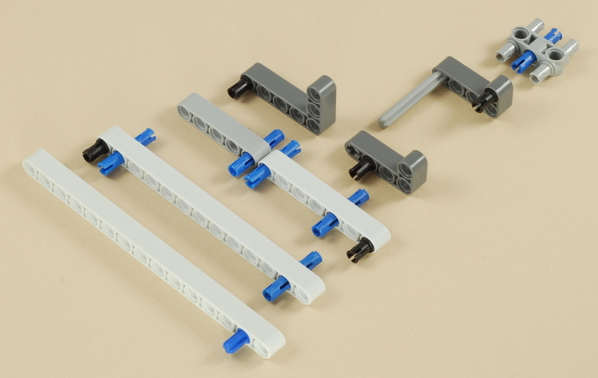
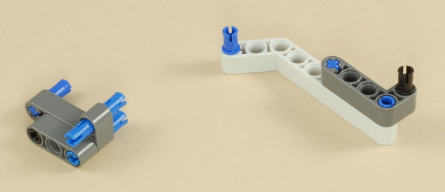
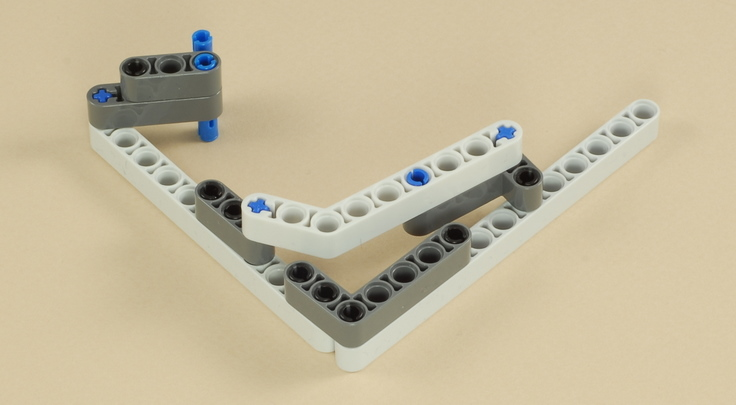

Fun Projects for your LEGO� MINDSTORMS� NXT!
|
|
Fun Projects for your LEGO� MINDSTORMS� NXT! |
| Pinball Machine |
|

The materials needed for the wooden box
are as follows. The #6 wood screws must be the "flat head" style
with the conical shaped underside to properly secure the LEGO parts.
The nylon washers are important to protect the LEGO parts from the metal
screws. Do
not use metal washers, they will damage the LEGOs.
|
||||||||||||||||||||||||||||||||||||
| The box can be easily constructed based on the pictures of the finished box below. The 1 x 2 piece is used as a crossbar on top and is shown added near the end of the building instructions. | ||||||||||||||||||||||||||||||||||||
| The arrangement of the LEGO parts mounted to the bottom of the box is shown below. You can use this picture as an overall reference when building and attaching the individual parts in the instructions below. |
1

2
3


4

5
6
7
8
9
| Drill two 3/16" (5 mm) holes near the bottom (downhill) side of the box as shown below. These two holes will accept the blue pegs on the bottom of the flippers to help brace them. Note that the two flippers are not centered in the box horizontally, because the ball shooter will go on the far right of the box. |
Mount the two flippers as follows:
|
10
11
| * Note: Although a 5.5M axle with stop is shown in these instructions, the ball shooter will work more reliably if built with a 6M axle, as shown below. The NXT 2.0 kit by itself contains only two 6M axles, both of which were already used in the flippers above, but if you have another 6M axle, use it instead. |
12
13
14
| Mount the ball shooter in the lower right corner of the box, as shown below. Note that it will point slightly to the left of when positioned properly against the right and bottom walls. Remember to use nylon washers when mounting all LEGO parts with screws. |
15
16


17
18
19

20
21
22
| Note: The color sensor will work more reliably and the lamp will look better if you tape a piece of white paper under it with clear tape, as shown below. |
23
24
| Leave a small gap inside the half bushings so that the pinwheel spins very easily. |
| Important: The pinwheel will be mounted to the
board as shown below, but wait until you have built the ultrasonic
sensor assembly and the wooden crossbar (built later below) before
screwing the pinwheel into its final position, so that you can position
it properly aligned with the sensor. For now, place it on the
board in its approximate position, but don't screw it in. |
25
26
27
| Mount the crossbar as shown below, leaving just enough room for the ball shooter magazine, then find the final position for the pinwheel and screw it down as well. The white fairing plate on the top of the pinwheel should be right in front of the ultrasonic sensor, 7 cm away, and as perpendicular to it as possible, with the pinwheel target still pointing towards the center of the flippers. The wiring diagram is shown in the next step below. |

28
Wire the motors and sensors to the NXT as shown the
table below. Route the wires to keep them out of the way of the
game. The pictures below all show the completed game from
different angles.
|
|
Pinball Machine Programming The Pinball Machine program is an example of a complex program that is split into several parts by using My Blocks. The "Pinball.rbtx" file in the PackAndGo folder is a "Pack-and-Go" package that contains the main Pinball program as well as the My Blocks and the custom graphic and sound files that are used by it. To use it, simply open the "Pinball.rbtx" file in the NXT 2.0 software, and it will load all the required files automatically, then download the main Pinball program to the NXT and run it. Instructions to use the pinball machine are displayed on the screen as the program runs. Understanding the Pinball Program
The Pinball Machine program uses the following My Blocks
to break down the program into smaller pieces. The blocks
have "PB_" at the beginning of the name to indicate that they
are specific to the Vending
Machine project and are not intended for use directly in another
project. To learn more about how to use and create My Blocks, see
the My Blocks Tutorial.
To start understanding how the Vending Machine works, start by studying the main Pinball program and reading the comments in it. This will give you an overall top-level view of how the program works. Then double-click each My Block to open its contents, where you can then learn more of the details of how they work. Note that some of the My Blocks are also used again by other My Blocks, and that the blocks share variables with each other and with the main program. The following diagram shows which blocks are used where.
|
|
Copyright
�
2007-2010 by Dave Parker. All rights reserved. |